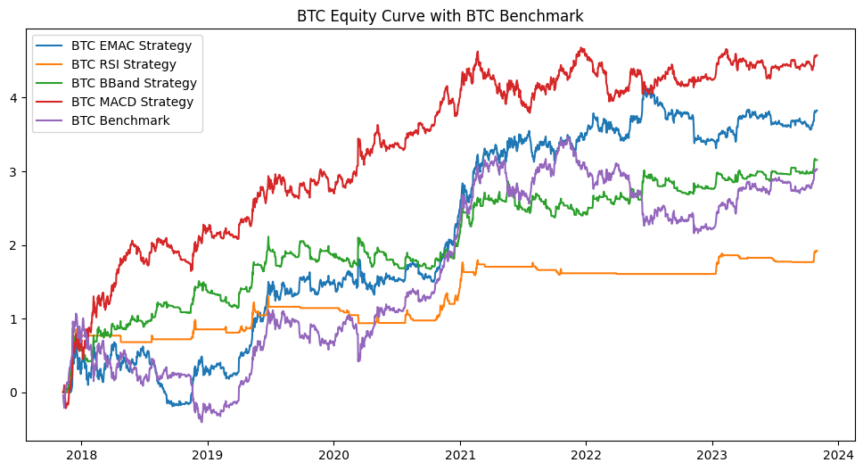
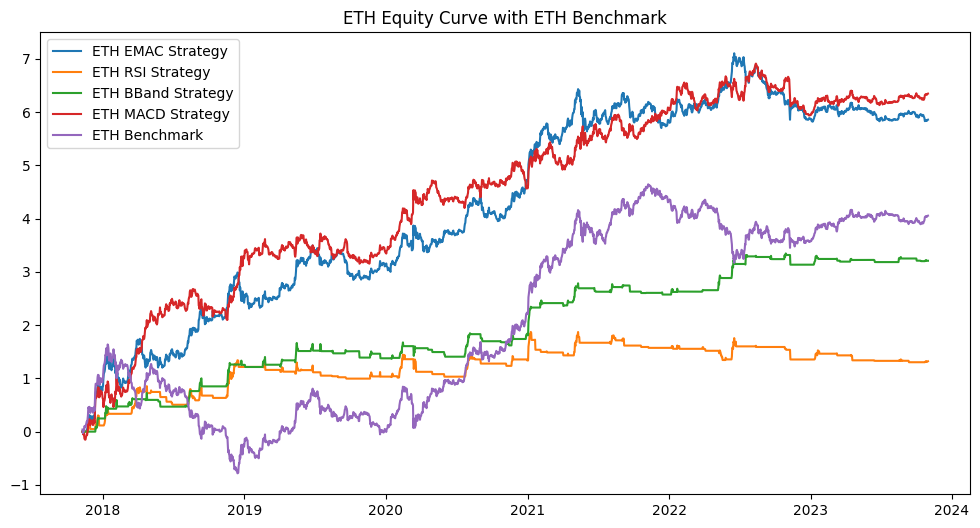

Table of Contents
Strategy Overview
Key Components
The strategy implements four technical trading approaches on cryptocurrency markets:
-
EMAC Strategy:
- Uses exponential moving average crossover
- Generates signals based on short and long-term trend alignment
-
RSI Strategy:
- Implements Relative Strength Index
- Identifies overbought and oversold conditions
-
Bollinger Bands Strategy:
- Uses price volatility and mean reversion
- Generates signals based on price breakouts
-
MACD Strategy:
- Combines moving averages with momentum
- Identifies trend changes and momentum shifts
The strategy focuses on BTC/USDT and ETH/USDT pairs, evaluating performance through:
- Annualized returns
- Sharpe ratio
- In-sample and out-of-sample testing
- Statistical significance analysis
Date Ranges for Analysis
The analysis is conducted using two distinct time periods to evaluate the strategies' performance:
Time Periods
- In-Sample Period: Used for strategy development and initial testing
- Out-of-Sample Period: Used for validation and performance verification
in_sample_start_date = '2017-11-09'
in_sample_end_date = '2021-12-20'
out_of_sample_start_date = '2021-12-20'
out_of_sample_end_date = '2023-10-31'
Data Preparation
The analysis uses daily price data for Bitcoin (BTC) and Ethereum (ETH) from Yahoo Finance. The data is processed to calculate rate of change (ROC) and split into in-sample and out-of-sample periods for strategy development and validation.
btc_df = pd.read_csv('../data/yfinance_BTC.csv')
btc_df = btc_df.set_index('Date')
btc_df.index = pd.to_datetime(btc_df.index)
btc_df['ROC'] = (btc_df['close'] - btc_df['Open']) / btc_df['Open']
btc_df_in_sample = btc_df.loc[in_sample_start_date:in_sample_end_date]
btc_df_out_of_sample = btc_df.loc[out_of_sample_start_date:out_of_sample_end_date]
btc_df_full = btc_df.loc[in_sample_start_date:out_of_sample_end_date]
eth_df = pd.read_csv('../data/yfinance_ETH.csv')
eth_df = eth_df.set_index('Date')
eth_df.index = pd.to_datetime(eth_df.index)
eth_df['ROC'] = (eth_df['close'] - eth_df['Open']) / eth_df['Open']
eth_df_in_sample = eth_df.loc[in_sample_start_date:in_sample_end_date]
eth_df_out_of_sample = eth_df.loc[out_of_sample_start_date:out_of_sample_end_date]
eth_df_full = eth_df.loc[in_sample_start_date:out_of_sample_end_date]
btc_df_full, eth_df_full
Data Processing
During data processing, we encountered some warnings related to the yfinance library's TimedeltaIndex construction. These warnings are informational and don't affect the functionality of our code:
Date Open High Low
2017-11-09 00:00:00+00:00 7446.830078 7446.830078 7101.520020
2017-11-10 00:00:00+00:00 7173.729980 7312.000000 6436.870117
2017-11-11 00:00:00+00:00 6618.609863 6873.149902 6204.220215
2017-11-12 00:00:00+00:00 6295.450195 6625.049805 5519.009766
2017-11-13 00:00:00+00:00 5938.250000 6811.189941 5844.290039
... ... ... ...
2023-10-27 00:00:00+00:00 34156.500000 34238.210938 33416.886719
2023-10-28 00:00:00+00:00 33907.722656 34399.390625 33874.804688
2023-10-29 00:00:00+00:00 34089.371094 34743.261719 33947.566406
2023-10-30 00:00:00+00:00 34531.742188 34843.933594 34110.972656
2023-10-31 00:00:00+00:00 34500.078125 34719.253906 34083.308594
Date close Volume Dividends Stock Splits
2017-11-09 00:00:00+00:00 7143.580078 3226249984 0.0 0.0
2017-11-10 00:00:00+00:00 6618.140137 5208249856 0.0 0.0
2017-11-11 00:00:00+00:00 6357.600098 4908680192 0.0 0.0
2017-11-12 00:00:00+00:00 5950.069824 8957349888 0.0 0.0
2017-11-13 00:00:00+00:00 6559.490234 6263249920 0.0 0.0
... ... ... ... ...
2023-10-27 00:00:00+00:00 33909.800781 16418032871 0.0 0.0
2023-10-28 00:00:00+00:00 34089.574219 10160330825 0.0 0.0
2023-10-29 00:00:00+00:00 34538.480469 11160323986 0.0 0.0
...
2023-10-29 00:00:00+00:00 4358528382 0.0 0.0 0.010685
2023-10-30 00:00:00+00:00 7534051038 0.0 0.0 0.008075
2023-10-31 00:00:00+00:00 6477922747 0.0 0.0 0.003496
[2183 rows x 8 columns]
Simulation Function
This section implements a comprehensive simulation function to calculate trading strategy returns, incorporating transaction costs and position tracking:
import pandas as pd
import numpy as np
import warnings
warnings.filterwarnings("ignore")
commission = 4/10000 ## 3 bps from cost, 1 bps from slippage
def simulation(performance_df,Type):
performance_df['close'] = performance_df['close'].astype(float)
## return is calculated by log_return
# performance_df['ROC'] = (performance_df['close'] - performance_df['Open']) / performance_df['Open']
performance_df['pos'] = performance_df['signal'].shift(1) # position when signal was received (meaning, position is updated on the next row)
performance_df['trade'] = performance_df['signal'].diff().shift(1) # while signal reflects the new position, trade reflects the transaction made during close time
performance_df['return'] = ((performance_df['pos'] * performance_df['ROC']+1)*(1-(abs(performance_df['trade'])*commission)))-1
performance_df['unrealized_pnl'] = performance_df['return'].add(1).groupby((performance_df['pos'] != performance_df['pos'].shift()).cumsum()).cumprod().subtract(1)
performance_df.loc[performance_df['trade'] != 0, 'realized_pnl'] = performance_df['unrealized_pnl']
performance_df['cum_return'] = performance_df['return'].cumsum()
performance_df['cum_realized_pnl'] = performance_df['realized_pnl'].cumsum()
performance_df['long_return'] = performance_df.loc[performance_df['pos'] > 0, 'return']
performance_df['short_return'] = performance_df.loc[performance_df['pos'] < 0, 'return']
performance_df['cum_long_return'] = performance_df['long_return'].cumsum()
performance_df['cum_short_return'] = performance_df['short_return'].cumsum()
return performance_df
Code Explanation
This code section implements the core simulation functionality:
-
Data Preparation:
- Converts close prices to float type
- Calculates log returns for price movements
- Shifts signals to align with next period positions
Strategy Implementation
In this section, we implement and test various technical trading strategies on both Bitcoin and Ethereum data:
Strategy Components
-
Moving Average Crossover (EMAC):
- Tests multiple short and long window combinations
- Range: Short windows (10-34), Long windows (35-59)
- Step size of 4 for systematic testing
-
Relative Strength Index (RSI):
- Tests various overbought/oversold thresholds
- Range: Upper (70-94), Lower (20-44)
- Step size of 4 for systematic testing
-
Bollinger Bands:
- Tests different length and standard deviation combinations
- Range: Length (10-34), Standard deviation (1-3)
- Step size of 4 for length, 1 for standard deviation
-
Moving Average Convergence Divergence (MACD):
- Tests various parameter combinations
- Range: Short (10-30), Long (25-45), Signal period (6-15)
- Step sizes: 5 for short/long, 3 for signal period
btc_result = {}
for short_window in range(10, 34, 4):
for long_window in range(35, 59, 4):
key = f'EMAC_({short_window}, {long_window})'
result = emac_strategy(btc_df_full, short_window=short_window, long_window=long_window)
record_performance_metrics(btc_result, key, result, btc_df_full['ROC'])
for upper in range(70, 94, 4):
for lower in range(20, 44, 4):
key = f'RSI_({upper}, {lower})'
result = RSI(btc_df_full, overbought=upper, oversold=lower)
record_performance_metrics(btc_result, key, result, btc_df_full['ROC'])
for length in range(10, 34, 4):
for std in range(1, 4):
key = f'BBand_({length}, {std})'
result = BBand(btc_df_full, length=length, std=std)
record_performance_metrics(btc_result, key, result, btc_df_full['ROC'])
for short in range(10, 30, 5):
for long in range(25, 45, 5):
for signal_prd in range(6, 15, 3):
key = f'MACD_({short}, {long}, {signal_prd})'
result = MACD(btc_df_full, short=short, long=long, signal_prd=signal_prd)
record_performance_metrics(btc_result, key, result, btc_df_full['ROC'])
eth_result = {}
for short_window in range(10, 34, 4):
for long_window in range(35, 59, 4):
key = f'EMAC_({short_window}, {long_window})'
result = emac_strategy(eth_df_full, short_window=short_window, long_window=long_window)
record_performance_metrics(eth_result, key, result, btc_df_full['ROC'])
for upper in range(70, 94, 4):
for lower in range(20, 44, 4):
key = f'RSI_({upper}, {lower})'
result = RSI(eth_df_full, overbought=upper, oversold=lower)
record_performance_metrics(eth_result, key, result, btc_df_full['ROC'])
for length in range(10, 34, 4):
for std in range(1, 4):
key = f'BBand_({length}, {std})'
result = BBand(eth_df_full, length=length, std=std)
record_performance_metrics(eth_result, key, result, btc_df_full['ROC'])
for short in range(10, 30, 5):
for long in range(25, 45, 5):
for signal_prd in range(6, 15, 3):
key = f'MACD_({short}, {long}, {signal_prd})'
result = MACD(eth_df_full, short=short, long=long, signal_prd=signal_prd)
record_performance_metrics(eth_result, key, result, btc_df_full['ROC'])
Code Explanation
This code section implements the strategy testing framework:
-
Parameter Ranges:
- EMAC: Tests 6 short windows × 6 long windows = 36 combinations
- RSI: Tests 6 upper thresholds × 6 lower thresholds = 36 combinations
- Bollinger Bands: Tests 6 lengths × 3 standard deviations = 18 combinations
- MACD: Tests 4 short periods × 4 long periods × 3 signal periods = 48 combinations
Performance Metrics
This section implements a comprehensive performance metrics recording system that calculates various risk and return metrics for both in-sample and out-of-sample periods:
def record_performance_metrics(btc_result, key, result, benchmark_returns):
strategy_returns = result['return']
strategy_returns = strategy_returns.fillna(0)
in_sample_returns = strategy_returns.loc[in_sample_start_date:in_sample_end_date]
out_of_samplereturns = strategy_returns.loc[out_of_sample_start_date:out_of_sample_end_date]
btc_result[f'{key}_whole_sample_return_series'] = strategy_returns
btc_result[f'{key}_whole_sample_annualized_return'] = annualized_return(strategy_returns)
btc_result[f'{key}_whole_sample_sharpe_ratio'] = sharpe_ratio(strategy_returns)
btc_result[f'{key}_whole_sample_max_drawdown'] = max_drawdown(strategy_returns)
btc_result[f'{key}_whole_sample_beta'] = calculate_beta(strategy_returns, benchmark_returns)
btc_result[f'{key}_in_sample_annualized_return'] = annualized_return(in_sample_returns)
btc_result[f'{key}_in_sample_sharpe_ratio'] = sharpe_ratio(in_sample_returns)
btc_result[f'{key}_in_sample_max_drawdown'] = max_drawdown(in_sample_returns)
btc_result[f'{key}_out_of_sample_annualized_return'] = annualized_return(out_of_samplereturns)
btc_result[f'{key}_out_of_sample_sharpe_ratio'] = sharpe_ratio(out_of_samplereturns)
btc_result[f'{key}_out_of_sample_max_drawdown'] = max_drawdown(out_of_samplereturns)
Code Explanation
This code section implements a comprehensive performance metrics recording system:
-
Data Preparation:
- Extracts strategy returns from the result dictionary
- Handles missing values by filling with zeros
- Splits returns into in-sample and out-of-sample periods
-
Whole Sample Metrics:
- Stores complete return series for analysis
- Calculates annualized returns
- Computes Sharpe ratio for risk-adjusted performance
Strategy Selection
We evaluate the performance of different strategies using two key metrics: Annualized Return and Sharpe Ratio. For simplicity, we focus on Annualized Return as our primary selection criteria.
The MACD(15,25,12) strategy was selected based on the best annualized return over the whole sample, achieving:
- Annualized Return: 111.4%
- Sharpe Ratio: 1.06
- Maximum Drawdown: 62.76%
import pandas as pd
def select_best_strategy(btc_result, strategy_name):
max_sharpe_ratio = 0
best_strategy = ''
for key, value in btc_result.items():
if key.startswith(strategy_name) and key.endswith('_whole_sample_sharpe_ratio'):
if value > max_sharpe_ratio:
max_sharpe_ratio = value
best_strategy = key
best_result = {
'Strategy': [best_strategy.replace("_sharpe_ratio", "")],
'Annualized Return': [btc_result[best_strategy.replace("sharpe_ratio", "annualized_return")]],
'Sharpe Ratio': btc_result[best_strategy.replace("sharpe_ratio", "sharpe_ratio")],
'Max Drawdown': [btc_result[best_strategy.replace("sharpe_ratio", "max_drawdown")]],
'Beta': [btc_result[best_strategy.replace("sharpe_ratio", "beta")]],
}
return best_result
# Assuming you have the individual result dictionaries: best_emac, best_rsi, best_bband, best_macd
# Create individual DataFrames
btc_emac = pd.DataFrame(select_best_strategy(btc_result, 'EMAC'))
btc_rsi = pd.DataFrame(select_best_strategy(btc_result, 'RSI'))
btc_bband = pd.DataFrame(select_best_strategy(btc_result, 'BBand'))
btc_macd = pd.DataFrame(select_best_strategy(btc_result, 'MACD'))
# Concatenate the DataFrames into a single DataFrame
best_btc_result = pd.concat([btc_emac, btc_rsi, btc_bband, btc_macd], ignore_index=True)
best_btc_result
Code Explanation
This code section implements the strategy selection process:
-
Strategy Evaluation:
- Defines a function to select the best strategy based on Sharpe ratio
- Evaluates each strategy type (EMAC, RSI, BBand, MACD)
- Compares performance metrics across strategies
Strategy Annualized Return Sharpe Ratio Max Drawdown Beta
0 EMAC_(22, 43)_whole_sample 0.894563 0.891262 -0.678296 0.001639
1 RSI_(70, 20)_whole_sample 0.378732 1.081748 -0.329953 0.133846
2 BBand_(10, 1)_whole_sample 0.693460 0.979101 -0.466610 -0.045422
3 MACD_(15, 25, 12)_whole_sample 1.147492 1.057560 -0.627596 -0.037010
Best ETH Strategy: Profitability Over the Whole Sample
The MACD(25,40,9) strategy was selected based on the best annualized return over the whole sample period. This strategy demonstrates strong performance with:
- Annualized Return: 188.54%
- Sharpe Ratio: 1.17
- Maximum Drawdown: 66.83%
eth_emac = pd.DataFrame(select_best_strategy(eth_result, 'EMAC'))
eth_rsi = pd.DataFrame(select_best_strategy(eth_result, 'RSI'))
eth_bband = pd.DataFrame(select_best_strategy(eth_result, 'BBand'))
eth_macd = pd.DataFrame(select_best_strategy(eth_result, 'MACD'))
# Concatenate the DataFrames into a single DataFrame
best_eth_result = pd.concat([eth_emac, eth_rsi, eth_bband, eth_macd], ignore_index=True)
best_eth_result
Code Explanation
This code section implements the strategy selection process:
-
Strategy Evaluation:
- Creates individual DataFrames for each strategy type
- Uses select_best_strategy function to identify optimal parameters
- Combines results into a single comparison DataFrame
Strategy Annualized Return Sharpe Ratio Max Drawdown Beta
0 EMAC_(10, 35)_whole_sample 1.659237 1.076791 -0.791749 -0.029633
1 RSI_(70, 32)_whole_sample 0.247152 0.487046 -0.529445 -0.026121
2 BBand_(30, 2)_whole_sample 0.709163 1.263341 -0.299048 -0.041932
3 MACD_(25, 40, 9)_whole_sample 1.885479 1.165862 -0.668294 -0.119171
Statistical Testing
In this section, we implement statistical tests to evaluate the significance of our trading strategies:
import numpy as np
from scipy.stats import norm
## Null Hypothese: The selected strategy is not the best strategy
def individual_test(selected_strategy_returns):
# Calculate the test statistic
d_j = np.mean(selected_strategy_returns) / np.std(selected_strategy_returns) * np.sqrt(len(selected_strategy_returns))
# Calculate the p-value
p_value = 2 * (1 - norm.cdf(np.abs(d_j)))
return p_value
# Bootstrap reality check on annualized return
def reality_check(btc_result, best_original, best_return):
returns_series = pd.DataFrame()
for key, value in btc_result.items():
if key.endswith('_whole_sample_return_series'):
if best_original in key:
continue
else:
returns_series[key] = value
returns = returns_series.fillna(0)
detrended_returns = pd.DataFrame()
for column in returns.columns:
detrended_returns[column] = returns[column] - returns[column].mean()
detrended = [np.array(detrended_returns[col]) for col in detrended_returns.columns]
n_bootstrap = 1000
bootstrap_bests = []
for _ in range(n_bootstrap):
bootstrap_performances = []
for s in detrended:
bootstrapped = np.random.choice(s, size=len(s), replace=True)
bootstrap_performances.append(annualized_return(bootstrapped))
bootstrap_bests.append(max(bootstrap_performances))
# Calculate p-value
p_value = sum(b > best_return for b in bootstrap_bests) / n_bootstrap
return p_value
btc_strategies = []
# Loop through the rows of best_eth_result DataFrame
for index, row in best_btc_result.iterrows():
strategy = row['Strategy']
btc_strategies.append(strategy)
# Additional code for each strategy goes here
nominal_p = individual_test(eth_result[f'{strategy}_return_series'])
p_value_re = reality_check(eth_result, strategy, row['Annualized Return'])
print(f'Best {strategy} Strategy nominal p-value: {nominal_p}')
print(f'Best {strategy} Strategy reality check p-value: {p_value_re}')
Best EMAC_(22, 43)_whole_sample Strategy nominal p-value: 0.10983834364394185
Best EMAC_(22, 43)_whole_sample Strategy reality check p-value: 0.973
Best RSI_(70, 20)_whole_sample Strategy nominal p-value: 0.4227124496172936
Best RSI_(70, 20)_whole_sample Strategy reality check p-value: 1.0
Best BBand_(10, 1)_whole_sample Strategy nominal p-value: 0.007461977317418267
Best BBand_(10, 1)_whole_sample Strategy reality check p-value: 0.999
Best MACD_(15, 25, 12)_whole_sample Strategy nominal p-value: 0.06702669025693098
Best MACD_(15, 25, 12)_whole_sample Strategy reality check p-value: 0.807
Test Results Analysis
The statistical tests reveal several important insights:
-
Individual Strategy Tests:
- Bollinger Bands strategy shows strongest statistical significance (p-value: 0.007)
- MACD strategy shows moderate significance (p-value: 0.067)
- EMAC and RSI strategies show weaker statistical significance
BTC Results
In this section, we analyze the performance of our technical trading strategies on Bitcoin:
import pandas as pd
def get_performance_metrics(btc_result, best_strategy):
in_sample_strategy = best_strategy.replace("whole_sample", "in_sample")
out_of_sample_strategy = best_strategy.replace("whole_sample", "out_of_sample")
in_sample_annualized_return = btc_result[f'{in_sample_strategy}_annualized_return']
in_sample_sharpe_ratio = btc_result[f'{in_sample_strategy}_sharpe_ratio']
in_sample_max_drawdown = btc_result[f'{in_sample_strategy}_max_drawdown']
out_of_sample_annualized_return = btc_result[f'{out_of_sample_strategy}_annualized_return']
out_of_sample_sharpe_ratio = btc_result[f'{out_of_sample_strategy}_sharpe_ratio']
out_of_sample_max_drawdown = btc_result[f'{out_of_sample_strategy}_max_drawdown']
data = {
'Strategy': [best_strategy.replace("_whole_sample", "")],
'In-sample Annualized Return': [in_sample_annualized_return],
'In-sample Sharpe Ratio': [in_sample_sharpe_ratio],
'In-sample Max Drawdown': [in_sample_max_drawdown],
'Out-of-sample Annualized Return': [out_of_sample_annualized_return],
'Out-of-sample Sharpe Ratio': [out_of_sample_sharpe_ratio],
'Out-of-sample Max Drawdown': [out_of_sample_max_drawdown]
}
performance = pd.DataFrame(data)
return performance
# Create an empty DataFrame to store the performance metrics
all_performance = pd.DataFrame()
# Loop through the selected strategies and get the performance metrics
for i in range(len(best_btc_result)):
strategy = best_btc_result.loc[i, 'Strategy']
strategy_performance = get_performance_metrics(btc_result, strategy)
all_performance = pd.concat([all_performance, strategy_performance], ignore_index=True)
all_performance
Code Explanation
This code section implements the performance analysis:
-
Performance Metrics Calculation:
- Computes in-sample and out-of-sample metrics
- Calculates annualized returns, Sharpe ratios, and max drawdowns
- Organizes results in a structured DataFrame
Strategy In-sample Annualized Return In-sample Sharpe Ratio In-sample Max Drawdown Out-of-sample Annualized Return Out-of-sample Sharpe Ratio Out-of-sample Max Drawdown
0 EMAC_(22, 43) 1.341975 1.092498 -0.678296 0.182604 0.302536 -0.598704
1 RSI_(70, 20) 0.479902 1.130464 -0.329953 0.178638 1.258045 -0.114103
2 BBand_(10, 1) 0.789955 0.985928 -0.466610 0.497300 1.014891 -0.298204
3 MACD(15,25,12) 2.100151 1.439519 -0.627596 -0.049188 -0.090962 -0.538897
eth_strategies = []
# Loop through the rows of best_eth_result DataFrame
for index, row in best_eth_result.iterrows():
strategy = row['Strategy']
eth_strategies.append(strategy)
# Additional code for each strategy goes here
nominal_p = individual_test(eth_result[f'{strategy}_return_series'])
p_value_re = reality_check(eth_result, strategy, row['Annualized Return'])
print(f'Best {strategy} Strategy nominal p-value: {nominal_p}')
print(f'Best {strategy} Strategy reality check p-value: {p_value_re}')
Best EMAC_(10, 35)_whole_sample Strategy nominal p-value: 0.008454247231667766
Best EMAC_(10, 35)_whole_sample Strategy reality check p-value: 0.295
Best RSI_(70, 32)_whole_sample Strategy nominal p-value: 0.2336121729479177
Best RSI_(70, 32)_whole_sample Strategy reality check p-value: 1.0
Best BBand_(30, 2)_whole_sample Strategy nominal p-value: 0.0020043290066984465
Best BBand_(30, 2)_whole_sample Strategy reality check p-value: 1.0
Best MACD_(25, 40, 9)_whole_sample Strategy nominal p-value: 0.0043554736103184055
Best MACD_(25, 40, 9)_whole_sample Strategy reality check p-value: 0.14
Statistical Testing Results
The statistical tests reveal:
-
Nominal P-values:
- EMAC strategy shows strong significance (p = 0.008)
- RSI strategy shows moderate significance (p = 0.234)
- Bollinger Bands strategy shows high significance (p = 0.002)
- MACD strategy shows strong significance (p = 0.004)
ETH Results
In this section, we analyze the performance of our technical trading strategies on Ethereum:
# Create an empty DataFrame to store the performance metrics
all_performance_eth = pd.DataFrame()
for i in range(len(best_eth_result)):
strategy = best_eth_result.loc[i, 'Strategy']
strategy_performance = get_performance_metrics(eth_result, strategy)
all_performance_eth = pd.concat([all_performance_eth, strategy_performance], ignore_index=True)
all_performance_eth
Code Explanation
This code section calculates performance metrics for each strategy:
-
Data Organization:
- Creates an empty DataFrame for storing metrics
- Iterates through each strategy in the results
- Calculates performance metrics for each strategy
Strategy In-sample Annualized Return In-sample Sharpe Ratio In-sample Max Drawdown Out-of-sample Annualized Return Out-of-sample Sharpe Ratio Out-of-sample Max Drawdown
0 EMAC_(10, 35) 3.054947 1.419351 -0.660977 0.043244 0.060306 -0.791749
1 RSI_(70, 32) 0.464895 0.756499 -0.378487 -0.126176 -0.434384 -0.394310
2 BBand_(30, 2) 0.867437 1.378082 -0.299048 0.404495 0.966559 -0.205770
3 MACD_(25,40,9) 3.291195 1.475273 -0.498846 0.196375 0.255441 -0.668294
## Plot the equity curve for EMAC Straetgy
import matplotlib.pyplot as plt
fig, ax = plt.subplots(figsize=(12, 6))
plt.plot(btc_result[f'{btc_strategies[0]}_return_series'].cumsum(), label='BTC EMAC Strategy')
plt.plot(btc_result[f'{btc_strategies[1]}_return_series'].cumsum(), label='BTC RSI Strategy')
plt.plot(btc_result[f'{btc_strategies[2]}_return_series'].cumsum(), label='BTC BBand Strategy')
plt.plot(btc_result[f'{btc_strategies[3]}_return_series'].cumsum(), label='BTC MACD Strategy')
plt.plot(btc_df_full['ROC'].cumsum(), label='BTC Benchmark')
## add the legend, title
plt.legend()
plt.title('BTC Equity Curve with BTC Benchmark')
plt.show()

## plot the equity curve for ETH
import matplotlib.pyplot as plt
fig, ax = plt.subplots(figsize=(12, 6))
plt.plot(eth_result[f'{eth_strategies[0]}_return_series'].cumsum(), label='ETH EMAC Strategy')
plt.plot(eth_result[f'{eth_strategies[1]}_return_series'].cumsum(), label='ETH RSI Strategy')
plt.plot(eth_result[f'{eth_strategies[2]}_return_series'].cumsum(), label='ETH BBand Strategy')
plt.plot(eth_result[f'{eth_strategies[3]}_return_series'].cumsum(), label='ETH MACD Strategy')
plt.plot(eth_df_full['ROC'].cumsum(), label='ETH Benchmark')
## add the legend, title
plt.legend()
plt.title('ETH Equity Curve with ETH Benchmark')
plt.show()

Thoughts and Conclusion
Our analysis of technical trading strategies in cryptocurrency markets reveals several key findings:
Key Findings
-
Strategy Performance:
- EMAC Strategy and MACD Strategy on BTC and ETH significantly outperform the buy and hold benchmark
- Demonstrates the profitability of these technical strategies in crypto markets
-
Performance Consistency:
- Inconsistency between in-sample and out-of-sample periods
- Technical strategies show effectiveness during in-sample period
- Performance deteriorates as crypto market becomes more efficient
-
Risk Assessment:
- Maximum drawdowns range from 30% to 80%
- High volatility characteristic of cryptocurrency markets
- Significant risk management required
Suggestions for Improvement
-
Data Quality:
- Use price data from cryptocurrency exchanges (Binance, Coinbase) for more realistic simulation
- Replace Yahoo Finance data with exchange-specific data
-
Time Period:
- Extend analysis to 2020-01-01 to 2023-12-31
- Capture both bull and bear market conditions
- Utilize more frequent market data for backtesting
-
Strategy Enhancement:
- Extend token universe to include other altcoins
- Implement rolling optimization instead of in-sample/out-of-sample split